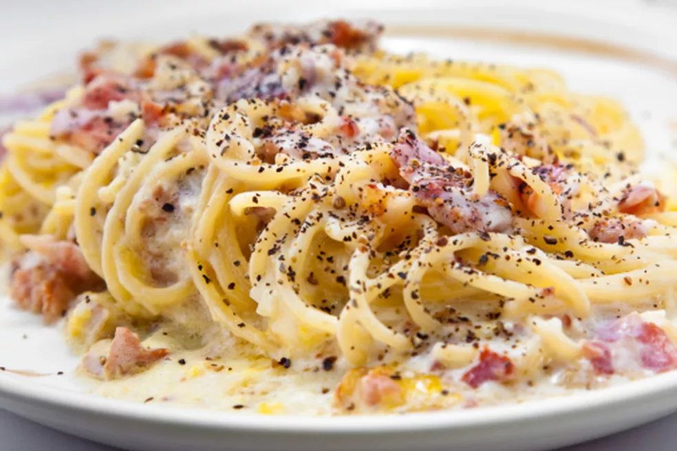

Home
Carbonara

Description
Carbonara is a classic Italian pasta dish made with eggs, cheese, pancetta (or guanciale),
and black pepper. It's creamy, rich, and full of flavor, without the need for cream.
Simple ingredients, delicious results!
Ingredients
- 200g spaghetti
- 100g guanciale (or pancetta), diced
- 2 large eggs (or 1 egg + 1 yolk for extra creaminess)
- 50g Pecorino Romano cheese, grated
- Freshly ground black pepper
- Salt
Directions
-
Cook the pasta
- Bring a pot of salted water to a boil and cook the spaghetti until al dente. Reserve about ½ cup of pasta water before draining.
-
Prepare the Guanciale
- In a cold pan, add the diced guanciale and heat over medium heat. Cook until crispy and golden, about 5 minutes. Turn off the heat.
-
Make the Sauce
- In a bowl, whisk the eggs, grated Pecorino Romano, and plenty of black pepper until smooth.
-
Combine Everything
- Add the hot, drained pasta to the pan with guanciale (off the heat). Toss well.
- Slowly add the egg mixture, stirring quickly to create a creamy sauce. If needed, add a splash of reserved pasta water to loosen the sauce.
-
Serve
- Plate immediately, topping with extra Pecorino Romano and more black pepper.
Enjoy your perfect, creamy, authentic Carbonara! 🍝✨